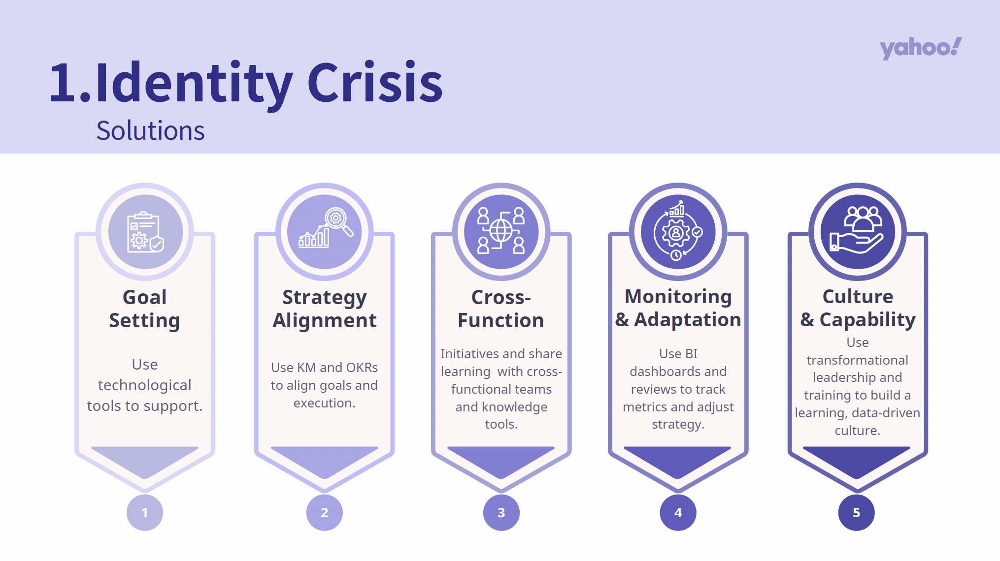
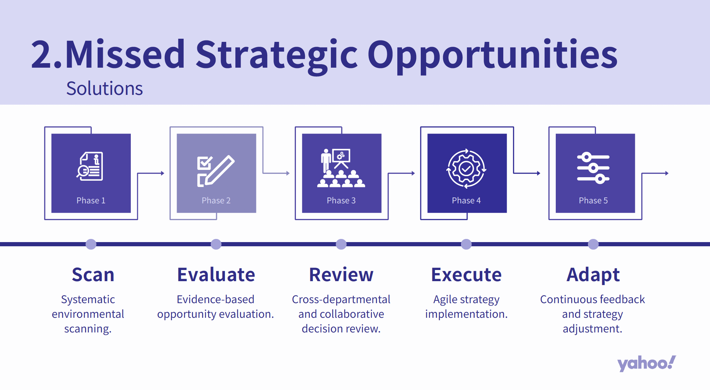

P07 / Business Management & Strategy Analysis
Yahoo! Management & Strategy Case Study
Analyzed Yahoo! as a business case, examining challenges related to organizational positioning, strategic direction, and management execution. I contributed to business problem identification, management recommendations, and an English-language presentation, connecting management concepts with practical strategic considerations.

Yahoo! Management & Strategy | Business Analysis & Strategic Recommendations
01
Business Challenges & Analysis
Companies navigating competitive markets must do more than identify promising opportunities. They also need to align corporate positioning, organizational capabilities, and strategy execution. When business objectives are disconnected from operational decisions, or when departments struggle to share information and resources, strategic initiatives can become difficult to implement effectively.
In this case study, our team examined Yahoo! through the perspectives of corporate identity, strategic opportunities, and organizational management. We applied management concepts to explore how goal setting, cross-functional coordination, and performance monitoring could help address organizational and strategic challenges.
Our analytical approach emphasized connecting business problems with appropriate management responses, ensuring that each recommendation was linked to an identified challenge rather than presented as a standalone idea.
02
My Contributions
My primary contribution involved identifying and analyzing management challenges, examining issues related to organizational positioning, strategic direction, and execution. I helped organize these observations into business problems that could be discussed using management concepts.
I also contributed to developing management recommendations, connecting identified challenges with possible responses such as aligning organizational goals with strategic priorities, strengthening cross-functional collaboration, and improving execution through feedback and performance review.
In addition, I participated in the English-language oral presentation, communicating the team's analysis, key arguments, and proposed solutions. This experience strengthened my ability to explain business problems and strategic recommendations in English.
03
Recommendations & Outcomes
The team completed a business management and strategy case study, developing recommendations focused on strategic goal alignment, cross-functional knowledge sharing, and execution feedback. The analysis was presented through a written report and an English-language presentation.
From a strategic planning perspective, the study emphasized the importance of connecting market opportunities, organizational capabilities, and business objectives, so that proposed strategies could be evaluated against available resources and execution requirements.
From an organizational management perspective, the recommendations highlighted cross-department information sharing and knowledge exchange, together with feedback and review mechanisms that could support strategic adjustments over time.
This project strengthened my experience in business problem framing, management analysis, strategic thinking, and English business presentations. It also helped me develop a more structured approach to applying management concepts to organizational challenges.
This was an academic business case study. The recommendations were developed by the team for analytical purposes and were not commissioned or implemented by Yahoo!.
SELECTED EVIDENCE
Business Management & Strategy Presentation



